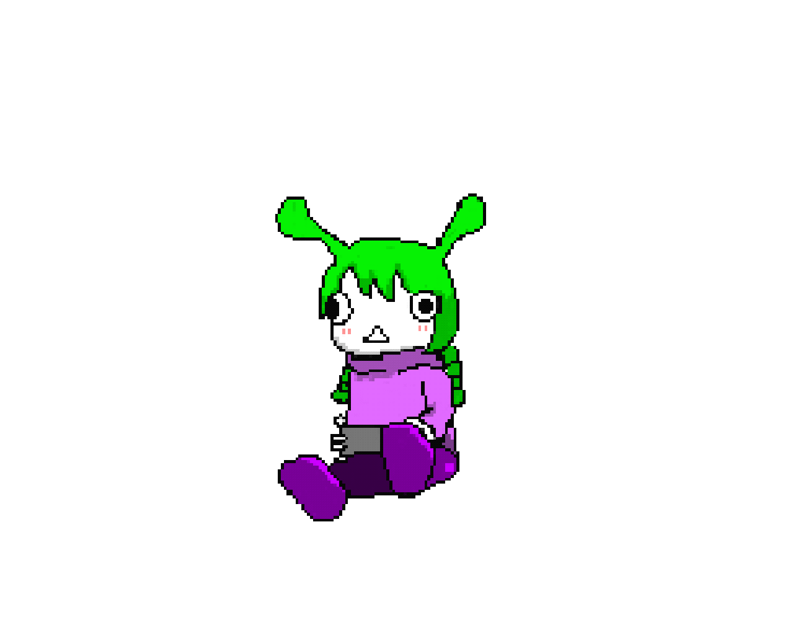

このサイトは、再生数100回以下というフィルターを通して、インターネットの奥に埋もれた何気ない風景と出会うことができる場所です。
それらを眺めていると、知らない誰かの人生を覗いているようでありながら、なぜか自分の記憶にも触れているような感覚になります。ホームビデオを見返すときのような、説明のつかない懐かしさや温かさがそこにはあります。
普段のインターネットでは、強い感情や刺激的な出来事ばかりが切り取られ、拡散されます。しかしこの場所にあるのは、そうした「見せるための瞬間」ではなく、ただ人が生きている時間の断片です。
車窓から流れる景色を眺めるように、ひとつの動画はすぐに通り過ぎていきます。そのため一度見た記憶を巻き戻したり、停止したりすることはできません。けれど、その一瞬のなかに人の存在や生活の気配が確かに残っています。
